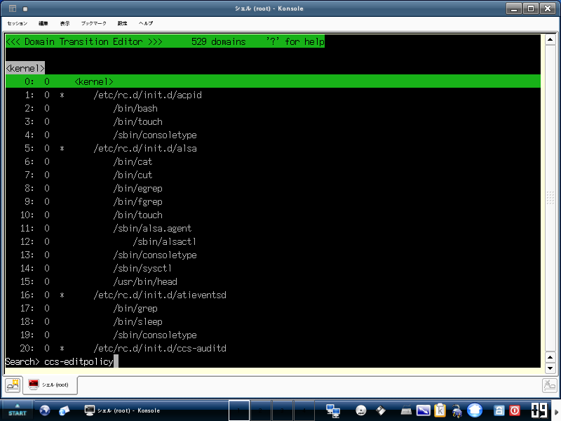
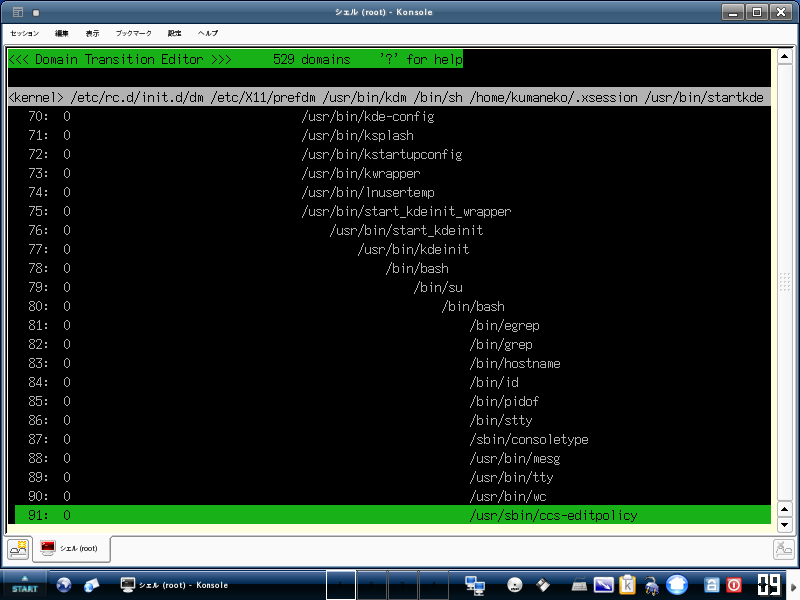
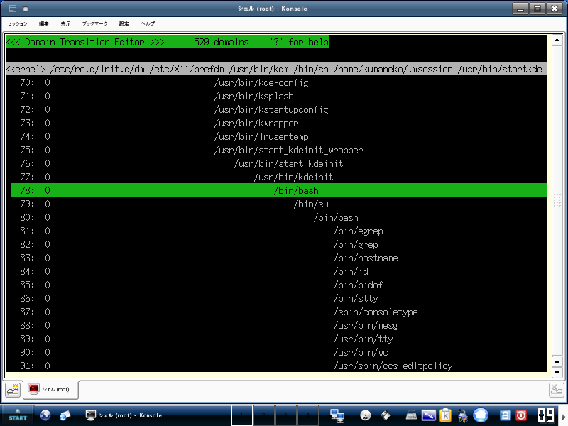
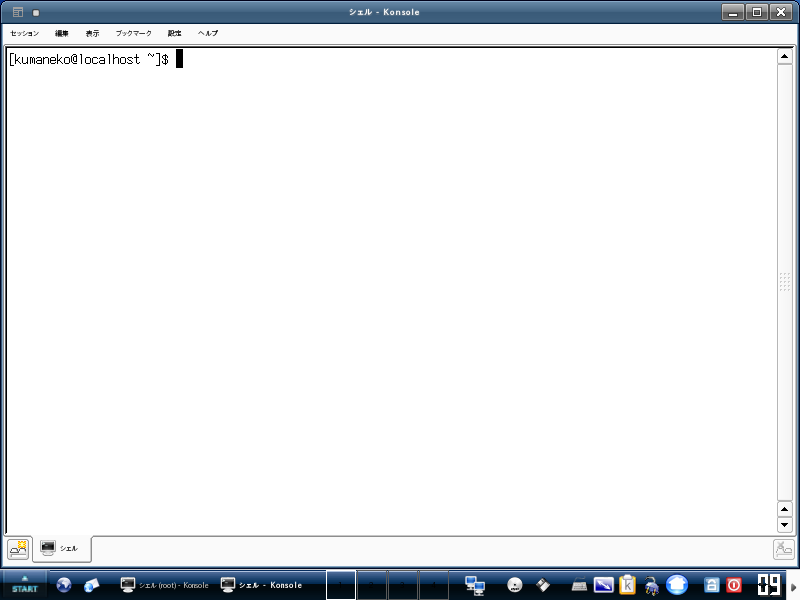
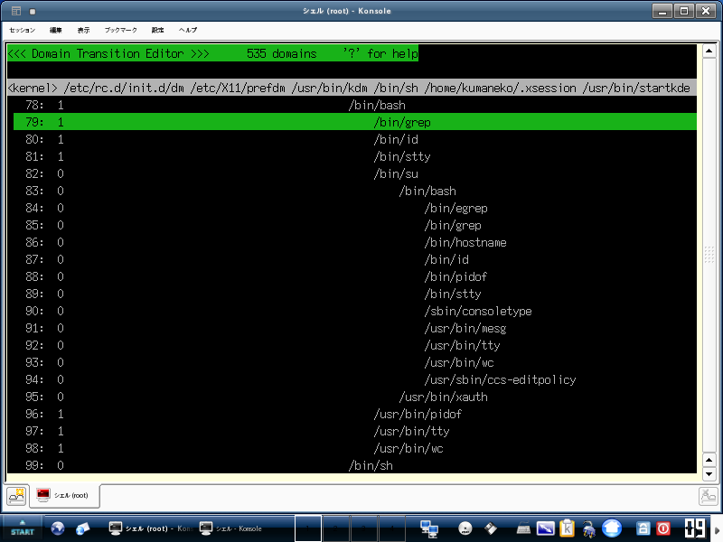
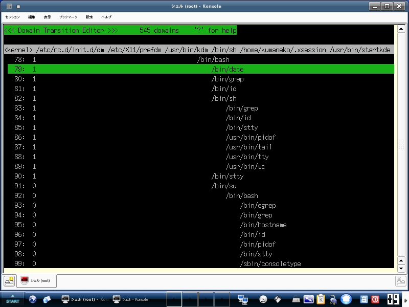
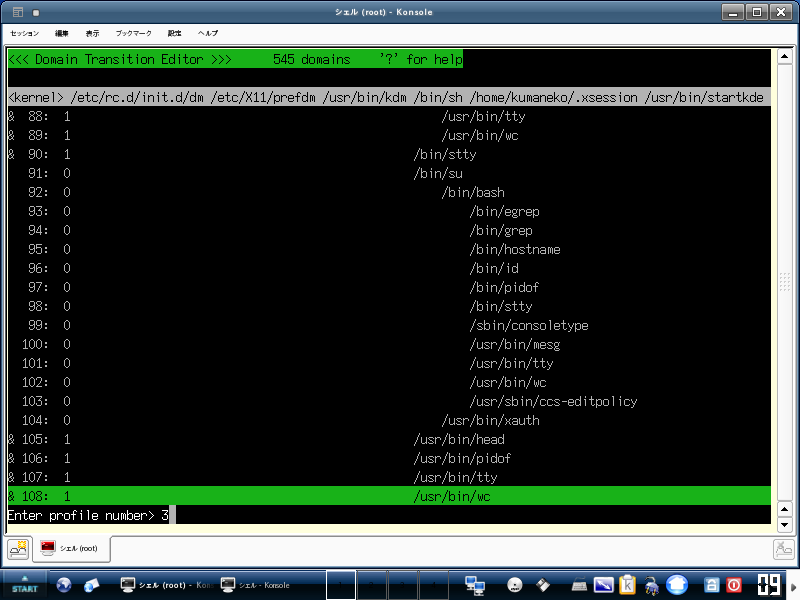
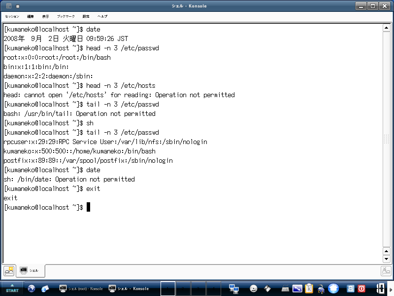

以下では、 Turbolinux Client 2008 で TOMOYO Linux 1.6.3 を利用する手順を解説します。 この手順書に従って操作すれば、 TOMOYO Linux の基本的な機能を体験し、簡単な設定と運用が行えるようになります。
最初に、 TOMOYO Linux 用のツールをインストールする必要があります。 TOMOYO Linux 用のツールには、 TOMOYO Linux のポリシーを管理するためのプログラムが含まれています。
管理者用のコンソールから、 ccs-tools パッケージをダウンロードしてインストールしてください。
管理者用のコンソールを開くには、「START」→「システム」→「その他のアプリケーション」→「コンソール（管理者モード）」の順番にメニューを選択してください。
以下のファイルをダウンロードしてインストールしてください。
# wget http://ftp.turbolinux.co.jp/pub/TurboLinux/TurboLinux/ia32/Client/12/misc/ccs-tools-1.6.8-1.i586.rpm # rpm -ivh ccs-tools-1.6.8-1.i586.rpm
この章で説明している内容を設定するためのスクリプトが付属しているので、管理者用のコンソールから以下のように実行してください。
# /usr/lib/ccs/init_policy.sh --file-only-profile
init_policy.sh の実行にはしばらく時間が掛かります。環境によっては１０分以上を要する場合もあります。
以上で準備完了です。システムを再起動してください。
# reboot
TOMOYO Linuxの設定を保存するディレクトリは /etc/ccs/ です。
TOMOYO Linux には多くの機能があり、どの機能を有効／無効にするのかの設定をプロファイルと呼びます。プロファイルは複数作成して切り替えて使うことができます。すべてのプロファイルは /etc/ccs/profile.conf という単一のファイルに保存します。
今回はファイルに対するアクセス制御の機能のみを利用するため、 /etc/ccs/profile.conf の内容は以下のようなっているはずです。
0-COMMENT=-----Disabled Mode----- 0-MAC_FOR_FILE=disabled 0-TOMOYO_VERBOSE=disabled 1-COMMENT=-----Learning Mode----- 1-MAC_FOR_FILE=learning 1-TOMOYO_VERBOSE=disabled 2-COMMENT=-----Permissive Mode----- 2-MAC_FOF_FILE=permissive 2-TOMOYO_VERBOSE=enabled 3-COMMENT=-----Enforcing Mode----- 3-MAC_FOR_FILE=enforcing 3-TOMOYO_VERBOSE=enabled
/etc/ccs/profile.conf の構文を以下に示します。
（プロファイル番号）-（設定項目）=（制御モード）
先頭の番号がプロファイル番号で、続いて設定項目、最後が制御モードです。
設定項目 COMMENT は、プロファイルを区別しやすくするためのコメントで、 TOMOYO Linux の機能には影響を与えません。
設定項目 MAC_FOR_FILE は「ファイルに対するアクセス制御」を表しており、制御モードが disabled なら無効、 learning なら学習、 permissive なら確認、 enforcing なら強制、となります。
設定項目 TOMOYO_VERBOSE は「ポリシー違反の情報をコンソールに出力するかどうか」を表しており、制御モードが disabled なら出力しない、 enabled なら出力するようになります。
上記設定では、プロファイル番号が 0 ～ 3 の 4 つのプロファイルを作成しており、それぞれの意味は以下のようになります。
| プロファイル 0 | ファイルに対するアクセス制御を無効にする／コンソールにポリシー違反を出力しない |
|---|---|
| プロファイル 1 | ファイルに対するアクセス制御を学習モードにする／コンソールにポリシー違反を出力しない |
| プロファイル 2 | ファイルに対するアクセス制御を確認モードにする／コンソールにポリシー違反を出力する |
| プロファイル 3 | ファイルに対するアクセス制御を強制モードにする／コンソールにポリシー違反を出力する |
学習モード（プロファイル 1 ）で行ったアクセスを元にポリシーを作成し、 確認モード（プロファイル 2 ）で仮運用して必要なポリシーが作成できているかを確かめ、 強制モード（プロファイル 3 ）で本運用としてアクセス制御を行う、 というのが基本的な運用の流れです。
ポリシーを変更することができるプログラムを、 /etc/ccs/manager.conf というファイルで指定します。以下のプログラムが指定されているはずです。
/usr/lib/ccs/loadpolicy /usr/lib/ccs/editpolicy /usr/lib/ccs/setlevel /usr/lib/ccs/setprofile /usr/lib/ccs/ld-watch /usr/lib/ccs/ccs-queryd
/etc/ccs/exception_policy.conf には以下の 12 種類の例外が指定されています。
TOMOYO Linux には、「アクセス許可ログ」（ドメイン用ポリシーに違反しなかったアクセス要求のログ）と「アクセス拒否ログ」（ドメイン用ポリシーに違反したアクセス要求のログ）の２種類のログが存在します。 ccs-tools パッケージをインストールすることにより、自動的に「アクセス拒否ログ」だけを保存するように構成されます。
管理者用のコンソールから TOMOYO Linux のポリシーエディタを実行してください。
# /usr/sbin/ccs-editpolicy
以下のような画面が表示されるはずです。なお、表示される domains の数は環境により異なります。
例えば、この画面の中から現在実行中のエディタを探してみましょう。「f」キーを押してから「ccs-editpolicy」と入力し、最後に「Enter」キーを押してください。

/usr/sbin/ccs-editpolicy というパス名を含んだ行を見つけることができるはずです。

矢印キーを使ってスクロールすることができます。カーソルを /usr/bin/kdeinit と /bin/su の間にある /bin/bash の行（この画像では７８行目）に移動させてください。

「Space」キーを押してください。すると、カーソルのある行の先頭に「&」というマークが表示されるはずです。
「s」キーを押してから「1」と入力し、「Enter」キーを押してください。「1」というのはプロファイル 1 のことを表しており、プロファイル 1 はポリシーの初期設定において学習モード用として定義されています。
行頭の数字が「1」になりました。これは、学習モード用のプロファイル 1 が割り当てられていることを示しています。
いくつかの操作をしてみるために、一般ユーザ用のコンソールを開いてください。
一般ユーザ用のコンソールを開くには、「START」→「システム」→「端末コンソール」の順番にメニューを選択してください。

一般ユーザ用のコンソールと管理者用コンソールとの違いは、一般ユーザ用のコンソールの中から /bin/su コマンドを実行して root ユーザのパスワードを入力したかどうかです。
TOMOYO Linux 用ツールのインストールにおいて「パスワード:」というプロンプトが表示されていますが、これは一般ユーザ用のコンソールを開いた直後に自動的に実行された /bin/su コマンドが表示しているものです。
ポリシーエディタの画面に切り替えて、「r」キーを押して最新の情報に更新してください。すると、行頭に「1」が付いた行がいくつか追加されているはずです。この画面では、「/bin/grep」「/bin/id」「/bin/stty」「/usr/bin/pidof」「/usr/bin/tty」「/usr/bin/wc」という６行が追加されています。

一般ユーザ用のコンソール画面に切り替えて、いくつか操作をしてみてください。
ポリシーエディタの画面に切り替えて、「r」キーを押して最新の情報に更新してください。すると、一般ユーザ用のコンソール画面で実行したプログラムが追加されているはずです。この画面では、「/bin/date」（７９行目）「/bin/sh」「/bin/grep」「/bin/id」「/bin/stty」「/usr/bin/pidof」「/usr/bin/tail」「/usr/bin/tty」「/usr/bin/wc」（８２～８９行目）「/usr/bin/head」（１０５行目）というのが追加されています。

カーソルを「 /usr/bin/head 」の行（１０５行目）に移動させてから「Enter」キーを押してください。「allow_read /etc/passwd」というエントリを確認することができるはずです。このエントリは、 TOMOYO Linux の学習モードにより自動的に追加されたものです。
「Enter」キーを押して元に戻ってください。同様に「/bin/sh」（８２行目）や「/usr/bin/tail」（８７行目）に対してどのようなエントリが追加されたかを見てみましょう。
既にお気づきかもしれませんが、 allow_read とは指定されたパス名を読み込みモードでオープンしたこと、 allow_read/write とは指定されたパス名を読み書きモードでオープンしたこと、 allow_execute とは指定されたパス名をプログラムとして実行したことを表しています。
一般ユーザ用のコンソール画面での操作では、管理者用のコンソールを開くために必要な操作（ /bin/su コマンドの実行）を学習させていませんでした。そのため、このまま強制モードにしてしまうと、管理者用のコンソールを開くことができなくなってしまいます。これは、ポリシーエディタを実行して強制モードを解除することができなくなることを意味します。
ですから、管理者用のコンソールを開始できるようにするために、一般ユーザ用のコンソールに対して /bin/su の実行許可を与えておきます。カーソルを一般ユーザ用のコンソールである /bin/bash の行（７８行目）に移動させてから「Enter」キーを押してください。
この状態で、「a」キーを押してから「allow_execute /bin/su」と入力し、「Enter」キーを押してください。
/bin/su の実行許可が与えられたことを確認したら、「Enter」キーを押して元の画面に戻ってください。
それでは、強制モードへ切り替えてみましょう。プロファイル 3 はポリシーの初期設定において強制モード用として定義されています。プロファイル 3 を現在プロファイル 1 が割り当てられている行に適用してみましょう。

選択された行には、プロファイル 3 が割り当てられました。
一般ユーザ用のコンソールに切り替えて、いくつか操作をしてみましょう。

学習モードの間に行った操作だけが許可されることを理解いただけるはずです。
ポリシーエディタの画面に切り替え、「q」キーを押してエディタを終了させてください。次に、「アクセス拒否ログ」を閲覧してみましょう。
# less /var/log/tomoyo/reject_log.conf
以下のように mode=enforcing という行を含んだログを見つけることができるはずです。
#2008-09-02 09:59:37# profile=3 mode=enforcing pid=4274 uid=500 gid=500 euid=500 egid=500 suid=500 sgid=500 fsuid=500 fsgid=500 state[0]=0 state[1]=0 state[2]=0
<kernel> /etc/rc.d/init.d/dm /etc/X11/prefdm /usr/bin/kdm /bin/sh /home/kumaneko/.xsession /usr/bin/startkde /usr/bin/start_kdeinit_wrapper /usr/bin/start_kdeinit /usr/bin/kdeinit /bin/bash /usr/bin/head
allow_read /etc/hosts
#2008-09-02 09:59:37# profile=3 mode=enforcing pid=4274 uid=500 gid=500 euid=500 egid=500 suid=500 sgid=500 fsuid=500 fsgid=500 state[0]=0 state[1]=0 state[2]=0
<kernel> /etc/rc.d/init.d/dm /etc/X11/prefdm /usr/bin/kdm /bin/sh /home/kumaneko/.xsession /usr/bin/startkde /usr/bin/start_kdeinit_wrapper /usr/bin/start_kdeinit /usr/bin/kdeinit /bin/bash /usr/bin/head
allow_read /usr/lib/gconv/EUC-JP.so
#2008-09-02 09:59:37# profile=3 mode=enforcing pid=4274 uid=500 gid=500 euid=500 egid=500 suid=500 sgid=500 fsuid=500 fsgid=500 state[0]=0 state[1]=0 state[2]=0
<kernel> /etc/rc.d/init.d/dm /etc/X11/prefdm /usr/bin/kdm /bin/sh /home/kumaneko/.xsession /usr/bin/startkde /usr/bin/start_kdeinit_wrapper /usr/bin/start_kdeinit /usr/bin/kdeinit /bin/bash /usr/bin/head
allow_read /usr/lib/gconv/EUC-JP.so
#2008-09-02 09:59:37# profile=3 mode=enforcing pid=4274 uid=500 gid=500 euid=500 egid=500 suid=500 sgid=500 fsuid=500 fsgid=500 state[0]=0 state[1]=0 state[2]=0
<kernel> /etc/rc.d/init.d/dm /etc/X11/prefdm /usr/bin/kdm /bin/sh /home/kumaneko/.xsession /usr/bin/startkde /usr/bin/start_kdeinit_wrapper /usr/bin/start_kdeinit /usr/bin/kdeinit /bin/bash /usr/bin/head
allow_read /usr/lib/gconv/EUC-JP.so
#2008-09-02 09:59:37# profile=3 mode=enforcing pid=4274 uid=500 gid=500 euid=500 egid=500 suid=500 sgid=500 fsuid=500 fsgid=500 state[0]=0 state[1]=0 state[2]=0
<kernel> /etc/rc.d/init.d/dm /etc/X11/prefdm /usr/bin/kdm /bin/sh /home/kumaneko/.xsession /usr/bin/startkde /usr/bin/start_kdeinit_wrapper /usr/bin/start_kdeinit /usr/bin/kdeinit /bin/bash /usr/bin/head
allow_read /usr/lib/gconv/EUC-JP.so
#2008-09-02 09:59:44# profile=3 mode=enforcing pid=4275 uid=500 gid=500 euid=500 egid=500 suid=500 sgid=500 fsuid=500 fsgid=500 state[0]=0 state[1]=0 state[2]=0 argc=4 envc=46 argv[]={ "tail" "-n" "3" "/etc/passwd" } envp[]={ "KDE_MULTIHEAD=false" "HOSTNAME=localhost" "DM_CONTROL=/var/run/xdmctl" "GPG_AGENT_INFO=/tmp/gpg-ipJudX/S.gpg-agent:3788:1" "TERM=xterm" "SHELL=/bin/bash" "LC_SOURCED=1" "HISTSIZE=1000" "XDM_MANAGED=/var/run/xdmctl/xdmctl-:0,maysd,mayfn,fn,rsvd,method=classic" "XDG_SESSION_COOKIE=457cc6821c6dec43887b31ce48bb8c33-1220313555.143126-1574269587" "GTK2_RC_FILES=/etc/gtk-2.0/gtkrc:/home/kumaneko/.gtkrc-2.0:/home/kumaneko/.kde/share/config/gtkrc-2.0" "GTK_RC_FILES=/etc/gtk/gtkrc:/home/kumaneko/.gtkrc:/home/kumaneko/.kde/share/config/gtkrc" "GS_LIB=/home/kumaneko/.fonts" "WINDOWID=50331655" "QTDIR=/usr/lib/qt3" "KDE_FULL_SESSION=true" "USER=kumaneko" "COMPOSITING_WM_START=no" "ENV=/home/kumaneko/.bashrc" "SESSION_MANAGER=local/localhost:/tmp/.ICE-unix/3817" "USERNAME=" "KONSOLE_DCOP=DCOPRef(konsole-4253,konsole)" "PATH=/usr/kerberos/bin:/usr/java/jre1.6.0_07/bin:/usr/local/bin:/usr/bin:/bin:/usr/bin:/usr/games" "DESKTOP_SESSION=default" "QT_IM_MODULE=scim" "KONSOLE_DCOP_SESSION=DCOPRef(konsole-4253,session-1)" "PWD=/home/kumaneko" "XMODIFIERS=@im=SCIM" "JAVA_HOME=/usr/java/jre1.6.0_07" "LANG=ja_JP.UTF-8" "KDE_SESSION_UID=500" "UNICODEMAP_JP=cp932,nec-vdc" "HISTCONTROL=ignoredups" "HOME=/home/kumaneko" "SHLVL=3" "XCURSOR_THEME=default" "LESS=-MM" "LOGNAME=kumaneko" "DBUS_SESSION_BUS_ADDRESS=unix:abstract=/tmp/dbus-qab5dkDzi6,guid=600515bdc768600a3bde494248bc81d3" "LESSOPEN=|/usr/bin/lesspipe.sh\040%s" "DISPLAY=:0.0" "GTK_IM_MODULE=scim" "G_BROKEN_FILENAMES=1" "COLORTERM=" "XAUTHORITY=/home/kumaneko/.Xauthority" "_=/usr/bin/tail" }
<kernel> /etc/rc.d/init.d/dm /etc/X11/prefdm /usr/bin/kdm /bin/sh /home/kumaneko/.xsession /usr/bin/startkde /usr/bin/start_kdeinit_wrapper /usr/bin/start_kdeinit /usr/bin/kdeinit /bin/bash
allow_execute /usr/bin/tail
#2008-09-02 09:59:44# profile=3 mode=enforcing pid=4275 uid=500 gid=500 euid=500 egid=500 suid=500 sgid=500 fsuid=500 fsgid=500 state[0]=0 state[1]=0 state[2]=0
<kernel> /etc/rc.d/init.d/dm /etc/X11/prefdm /usr/bin/kdm /bin/sh /home/kumaneko/.xsession /usr/bin/startkde /usr/bin/start_kdeinit_wrapper /usr/bin/start_kdeinit /usr/bin/kdeinit /bin/bash
allow_read /usr/bin/tail
#2008-09-02 09:59:44# profile=3 mode=enforcing pid=4275 uid=500 gid=500 euid=500 egid=500 suid=500 sgid=500 fsuid=500 fsgid=500 state[0]=0 state[1]=0 state[2]=0
<kernel> /etc/rc.d/init.d/dm /etc/X11/prefdm /usr/bin/kdm /bin/sh /home/kumaneko/.xsession /usr/bin/startkde /usr/bin/start_kdeinit_wrapper /usr/bin/start_kdeinit /usr/bin/kdeinit /bin/bash
allow_read /usr/lib/gconv/EUC-JP.so
#2008-09-02 09:59:55# profile=3 mode=enforcing pid=4291 uid=500 gid=500 euid=500 egid=500 suid=500 sgid=500 fsuid=500 fsgid=500 state[0]=0 state[1]=0 state[2]=0 argc=1 envc=46 argv[]={ "date" } envp[]={ "KDE_MULTIHEAD=false" "DM_CONTROL=/var/run/xdmctl" "HOSTNAME=localhost" "GPG_AGENT_INFO=/tmp/gpg-ipJudX/S.gpg-agent:3788:1" "SHELL=/bin/bash" "TERM=xterm" "XDG_SESSION_COOKIE=457cc6821c6dec43887b31ce48bb8c33-1220313555.143126-1574269587" "XDM_MANAGED=/var/run/xdmctl/xdmctl-:0,maysd,mayfn,fn,rsvd,method=classic" "HISTSIZE=1000" "LC_SOURCED=1" "GTK2_RC_FILES=/etc/gtk-2.0/gtkrc:/home/kumaneko/.gtkrc-2.0:/home/kumaneko/.kde/share/config/gtkrc-2.0" "GS_LIB=/home/kumaneko/.fonts" "GTK_RC_FILES=/etc/gtk/gtkrc:/home/kumaneko/.gtkrc:/home/kumaneko/.kde/share/config/gtkrc" "WINDOWID=50331655" "QTDIR=/usr/lib/qt3" "KDE_FULL_SESSION=true" "USER=kumaneko" "COMPOSITING_WM_START=no" "ENV=/home/kumaneko/.bashrc" "USERNAME=" "SESSION_MANAGER=local/localhost:/tmp/.ICE-unix/3817" "KONSOLE_DCOP=DCOPRef(konsole-4253,konsole)" "DESKTOP_SESSION=default" "PATH=/usr/kerberos/bin:/usr/java/jre1.6.0_07/bin:/usr/local/bin:/usr/bin:/bin:/usr/bin:/usr/games" "QT_IM_MODULE=scim" "PWD=/home/kumaneko" "KONSOLE_DCOP_SESSION=DCOPRef(konsole-4253,session-1)" "JAVA_HOME=/usr/java/jre1.6.0_07" "XMODIFIERS=@im=SCIM" "LANG=ja_JP.UTF-8" "KDE_SESSION_UID=500" "UNICODEMAP_JP=cp932,nec-vdc" "HISTCONTROL=ignoredups" "SHLVL=4" "HOME=/home/kumaneko" "XCURSOR_THEME=default" "LOGNAME=kumaneko" "LESS=-MM" "DBUS_SESSION_BUS_ADDRESS=unix:abstract=/tmp/dbus-qab5dkDzi6,guid=600515bdc768600a3bde494248bc81d3" "LESSOPEN=|/usr/bin/lesspipe.sh\040%s" "DISPLAY=:0.0" "GTK_IM_MODULE=scim" "G_BROKEN_FILENAMES=1" "XAUTHORITY=/home/kumaneko/.Xauthority" "COLORTERM=" "_=/bin/date" }
<kernel> /etc/rc.d/init.d/dm /etc/X11/prefdm /usr/bin/kdm /bin/sh /home/kumaneko/.xsession /usr/bin/startkde /usr/bin/start_kdeinit_wrapper /usr/bin/start_kdeinit /usr/bin/kdeinit /bin/bash /bin/sh
allow_execute /bin/date
#2008-09-02 09:59:55# profile=3 mode=enforcing pid=4291 uid=500 gid=500 euid=500 egid=500 suid=500 sgid=500 fsuid=500 fsgid=500 state[0]=0 state[1]=0 state[2]=0
<kernel> /etc/rc.d/init.d/dm /etc/X11/prefdm /usr/bin/kdm /bin/sh /home/kumaneko/.xsession /usr/bin/startkde /usr/bin/start_kdeinit_wrapper /usr/bin/start_kdeinit /usr/bin/kdeinit /bin/bash /bin/sh
allow_read /bin/date
#2008-09-02 09:59:55# profile=3 mode=enforcing pid=4291 uid=500 gid=500 euid=500 egid=500 suid=500 sgid=500 fsuid=500 fsgid=500 state[0]=0 state[1]=0 state[2]=0
<kernel> /etc/rc.d/init.d/dm /etc/X11/prefdm /usr/bin/kdm /bin/sh /home/kumaneko/.xsession /usr/bin/startkde /usr/bin/start_kdeinit_wrapper /usr/bin/start_kdeinit /usr/bin/kdeinit /bin/bash /bin/sh
allow_read /usr/lib/gconv/EUC-JP.so
ccs-editpolicy を用いて閲覧していたポリシーは、メモリ上にのみ存在しています。そのため、シャットダウンすることにより失われてしまいます。メモリ上に存在しているポリシーをディスク上に保存するためには、以下のコマンドを実行してください。
# /usr/sbin/ccs-savepolicy
このようにTOMOYO Linuxを用いれば、
行ったかを監視することもできます。
もし、 TOMOYO Linux の操作を行うために root ユーザになることを要求したくないのであれば、 root 以外のユーザによる操作を認めるように TOMOYO Linux を設定することができます。
例えば、 demo というユーザに TOMOYO Linux の操作を認めたい場合、以下の内容を /etc/ccs/ccs-post-init というファイルに記述してください。
#! /bin/sh echo manage_by_non_root > /proc/ccs/manager chown -R demo:demo /proc/ccs/
このようにすると、 /etc/ccs/ccs-post-init は /sbin/ccs-init から呼び出されるようになります。なお、プログラムを実行するために
# chmod 700 /etc/ccs/ccs-post-init
を実行することで実行可能な状態にすることを忘れないでください。また、 demo というユーザが /etc/ccs/ 以下にあるポリシーファイルを読み書きできるようにするために
# chown -R demo:demo /etc/ccs/
を実行する必要があります。
ポリシーエディタ /usr/sbin/ccs-editpolicy のマニュアルは ポリシーエディタの使い方 を参照ください。